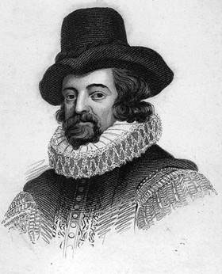

Фрэнсис Бэкон, английский философ-материалист, родился 22 января 1561 г. в Лондоне в
семье советника королевы Елизаветы I. Его дед служил управляющим овцеводческим поместьем у крупного помещика, а отец
стал лордом — хранителем королевской печати, имел титул виконта, заседал в палате лордов, и считался одним из
выдающихся юристов своего времени. Фрэнсис окончил Кембриджский университет, затем выполнял дипломатические поручения
в Париже, служил адвокатом в Лондоне, избирался членом палаты общин, где был лидером оппозиции. После смерти старшего
брата получил место лорда-канцлера при короле Якове I и титул барона Верулама и виконта Сент-Альбана.
Занятость государственными делами не помешала Бэкону в 1620 г. написать «Новый органон» — основную часть
философского трактата «Великое восстановление наук». Основная идея трактата — неостановимость и беспредельность
человеческого прогресса, восхваление человека как главной силы этого процесса. Бэкон относил историю к сфере памяти,
поэзию — к сфере воображения и философию — к сфере разума. На этих постулатах основана Энциклопедия Дидро.
В области художественного творчества Бэкон считал своим учителем Мишеля Монтеня. С 1597 по 1625 гг. издавал свой
сборник «Опыты, или Наставления нравственные и политические», где собраны мысли и афоризмы Бэкона: «Об истине», «О
смерти», «О богатстве», «О счастье», «О красоте», «О занятиях науками», «О муже», «О суеверии» и т.д.
В «Опытах» нашел место и очерк «О путешествиях», в котором он высказал свое мнение о полезности путешествий и дал
советы с чем следует знакомиться путешественнику.
Ф. Бекон оставил сборник эссе «О мудрости древних» и незавершенный утопический роман «Новая Атлантида», где
предсказывал появление подводных лодок и самолетов, передачу звука и света на расстояние, целенаправленное изменение
климата, проникновение в секреты долголетия. Умер 9 апреля 1626 г. в Лондоне.
«О путешествиях»
В 1612 г. Ф. Бекон публикует очерк «О путешествиях». Он начинает его, рассуждая о важной роли путешествий в жизни
человека, следующей фразой, оставшейся справедливой на все времена:
«В юности путешествия служат пополнению образования, в зрелые годы – пополнению опыта».
Далее Ф. Бекон рекомендует, что следует посещать и наблюдать во время путешествий: «…королевский двор, особенно во
время приема послов; суд, когда там разбирается дело, а также церковные консистории; храмы и монастыри с находящимися
там памятниками; стены и укрепления городов, а также гавани и пристани; памятники старины; библиотеки; колледжи,
происходящие в них диспуты и лекции; корабли и верфи; дворцы и общественные сады вблизи больших городов; арсеналы,
склады боеприпасов; биржи; торговые склады; конные ристалища; состязания в фехтовании; места обучения войск и тому
подобное; комедию, какую посещает порядочное общество; сокровищницы драгоценностей; кунсткамеры и антикварные лавки, -
словом все достопримечательности посещаемой страны, о которых наставникам и слугам надлежит тщательно собрать
сведения. Что касается торжественных процессий, представлений, празднеств, бракосочетаний, погребений, публичных
казней и тому подобных зрелищ – то о них напоминать нет нужды…».
Чрезвычайно развернутый перечень разнообразных экскурсионных объектов и общественных событий, целесообразных для
посещения любопытствующими путешественниками, приводит в своем очерке Ф. Бекон. Они и сегодня представляют собой
важные ресурсы культурного и событийного туризма.